Gedistribueerde gegevensverwerking
Mijn persoonlijke samenvatting van GDV. Er staat ook telkens bij geschreven of onze Bruno in de les heeft gezegd dat een bepaald onderwerp belangrijk is voor het examen. Ik sla ook sommige details over die ik niet belangrijk acht.
Het tekstje hierboven heb ik een paar dagen geleden geschreven. Onder tussen is deze samenvatting een textbook voorbeeld geworden van scope creep. Op het moment dat ik dit schrijf zitten we aan 8800 woorden. Oeps.
H1 - Data and data preprocessing
Data
Data is overal en wordt tegenwoordig ook constant opgeslagen. Ik denk niet dat ik moet uitleggen wat data is.
Data mining
Er is tegenwoordig veel data.
Om daar iets uit te kunnen halen moeten we deze data:
- Opslaan
- Beheren
- Analyseren
Wat is data mining?
Nieuwe (potentiëel nuttige) info uit data halen
Exploratie en analyse van data om nuttige patronen te vinden
Patronen en modellen vinden die:
- Geldig zijn
- Nuttig zijn
- Onverwacht zijn
- Begrijpbaar zijn
Waarom data mining?
Veel data wordt bijgehouden
- Google enzo
- Online aankopen
- Banktransacties
- Etc
Data gebruiken om diensten te verbeteren
Het is ook nuttig in de wetenschap.
Taken van data mining
Voorspellen: variabelen gebruiken om toekomstige waarden van andere variabelen te voorspellen
Classificatie: een model vinden voor een attribuut van een klasse op basis van de waarden van andere attributen
- Om bv. frauduleuze credit card transacties op te sporen
- Om nieuwsberichten te classificeren in categorieën
Regressieanalyse: een waarde van een continue variabele op basis van de waarden van andere variabelen
Clustering: groepen van objecten zoeken die sterk op elkaar lijken en ze groeperen
- We kunnen bijvoorbeeld klanten met gelijkaardige koopgewoontes clusteren om zo specifiekere reclame te sturen
Beschrijven: patronen vinden in data, op een manier die door mensen te begrijpen valt
Deviation/anomaly/change detection: dingen vinden die sterk afwijken van normaal gedrag
- Fraude opsporen
- Intrusiedetectie bij netwerken
Beide tesamen:
Association rules:
- bv. een lijst van dingen die vaak samen gekocht worden, dan kunnen we bijvoorbeeld voorspellen dat als iemand melk koopt, hij ook eieren koopt
- symptomen die samen voorkomen om te voorspellen welke ziekte een persoon heeft
Attribute types and dataset types
Data: een verzameling van dataobjecten en hun attributen
Attribuut: een eigenschap van een object (kunnen getallen of symbolen zijn)
Nominal: variabelen met een naam (oogkleur, geslacht, postcode)
Ordinal: variabelen met een naam en orde (punten op 10, rating van een restaurant)
Interval: variabelen die een interval beschrijven met een naam en orde (datum, temperatuur)
Ratio: een proportioneel interval tussen een variabele en 0 (lengte, tijd, leeftijd) (je kan hier niet onder 0)
- een ratio krijgt zijn naam omdat alleen bij deze soort variabele het zinvol is om er twee van in verhouding met elkaar te zetten. (temperatuur in celsius is dus geen ratio)
Object: een verzameling van attributen
Er zijn dicrete en continue attributen. Dit ga ik ook echt niet uitleggen.
Soorten datasets
Record: een verzameling van records met een vast aantal attributen
- Data matrix
- Transactiedata: elke record heeft een set van items (denk aan bread, coke, milk van hiervoor)
Graaf
- Jullie hebben allemaal gegevensstructuren veronderstel ik
Geordende data: een opeenvolging van items of gebeurtenissen
- Het menselijk genoom
Belangrijke karakteristieken:
Data similarity and dissimilarity measures
Similarity measure
- Meten hoe gelijkaardig twee dataobjecten zijn
- Vaak tussen
Dissimilarity measure
- Meten hoe verschillend twee dataobjecten zijn
- Minimum is vaak 0, bovengrens variëert
Euclidische afstand
- Basically de wortel van de som van het kwadraat van elke afstand. Zorg dat variabelen in dezelfde eenheid staan, anders zegt de euclidische afstand niet veel.
Normalisatie
- We gaan de data schalen zodat we gemakkelijk meerdere attributen samen kunnen voorstellen.
- Min-max normalisatie:
- Z-score normalisatie:
Minkowski afstand
- Is eigenlijk een veralgemening van de euclidische afstand
- r = 1: Manhattan afstand; som van alle afstanden
- r = 2: euclidische afstand
- r
Conclusie: als de afstand tussen 2 objecten groot is, zijn ze meer verschillend.
Density: hoe dicht objecten bij elkaar liggen in een bepaald gebied
- Euclidian density, we verdelen een onze grafiek in even grote, vierkante cellen en tellen hoeveel objecten er in elke cel zitten.
- Euclidian density, center based: het aantal punten binnen een bepaalde straal van een punt
Data preprocessing
Waarom?
Data in de echte wereld is vuil. We moeten onze data dus schoonmaken.
Belangrijke taken
Data cleaning:
Ontbrekende waarden invullen: kan op meerdere manieren maar dat kan je wel zelf verzinnen
Uitschieters verwijderen
- Maar soms kunnen ze nuttig zijn (fraude)
Duplicates verwijderen
Typos verbeteren
Noisy data
- In bins verdelen, clusteren, menselijke inspectie of regressie om hiermee om te gaan
Validity, Accuracy, Completeness, Consistency, Uniformity (willen ze dat we dit kunnen opzeggen?)
Binning
- Equal-width (distance) partitioning: een spectum aan waarden verdelen in
- Equal-depth (frequency) partitioning: ook verdelen in
- Equal-width (distance) partitioning: een spectum aan waarden verdelen in
Parsing: bv. naam, voornaam en adres uit een string halen
Standardiseren: alle adressen van hetzelfde formaat enzo
Matching: objecten vinden die eigenlijk hetzelfde zijn en samenvoegen (consolidating)
Data integration
- Meerdere datasets of databases samenvoegen
- Soms zijn er conflicten (waarden in anderen eenheden, dezelfde waarde maar andere naam)
Data transformation: normalisatie of aggregatie
Data reduction:
Aggregatie: meerdere attributen combineren tot één attribuut
Sampling: soms kan je een deel van de data wegsmijten en toch dezelfde resutaten behalen (nuttig voor data mining)
- Simple random sampling: gewoon random kiezen
- Stratified sampling: data verdelen in partities en daaruit random samplen
Dimensionality reduction: maakt het gemakkelijker om met de data te werken en te visualiseren
Feature subset selection: alleen de features die je nodig hebt gebruiken (student id is bijvoorbeeld niet nuttig bij een voorspelling van resultaten)
Feature creation: een nieuwe attribuut maken die de belangrijke info uit een dataset beter weergeeft (edges van afbeeldingen berekenen bijvoorbeeld)
Discretization: continue waarde omzetten in discrete waarde
H2 - Exploratory data analysis
Belangrijke eerste stap in het analyseren van data. Met EDA kunnen we de data verstaanbaar maken voor mensen.
Univariate non-graphical EDA
= één variabele voorstellen op een niet-grafische manier
Categorische data
- Frequentietabel
Quantitatieve data
Frequentiedistributietabellen
Cumulatieve frequentiedistributietabellen
Central tendency
- Gemiddelde
- Modus
- Mediaan
Spread
- Range: afstand tussen het maximum en minimum
- Variantie: hoe groter de afstand van het gemiddelde, hoe hoger de variantie
- Standaardafwijking: gemiddelde afstand van het gemiddelde
- Kwartielen
- Percentielen
Stem-and-leaf plot: bv leeftijd opdelen per 10 jaar
- {23,25,45,51,53,58} wordt 2 : {3, 5}, 4 : {5}, ...
Univariate graphical EDA
Een variabele voorstellen aan de hand van een grafiek
- Histogram: barplot van frequenties
- Boxplot
Multivariate non-graphical EDA
2 categorische variabelen
- Frequentietabel
1 categorische, 1 kwantitatieve variabele
- Stratified stem-and-leaf plots
- Side-by-side boxplots
2 kwantitatieve variabelen
- Scatterplot
Covariantie/correlatie
kijken hoe de 2 variabelen correleren aan elkaar
Covariantie en correlatiematrix
Bij veel variabelen van elke variabele met elke andere variabele de covariantie of correlatie berekenen en voorstellen in een matrix.
Multivariate graphical EDA
1 categorische en 1 kwantitatieve variabele
- Side-by-side boxplots
2 kwantitatieve variabelen
- Scatterplot
Skewness
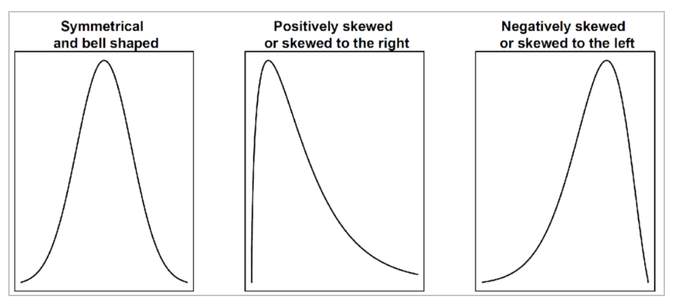
Als de distributie symmetrisch is vallen het gemiddelde en de mediaan samen.
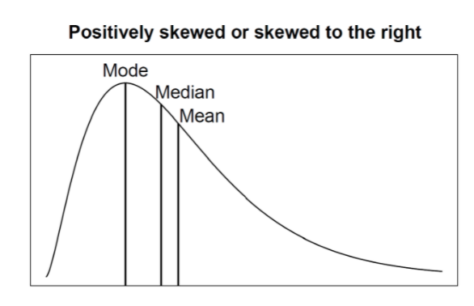
Deze distributie is positief skewed, want de staart is langer aan de rechterkant.
H3 - Data system foundations
Een paar definities:
Systems of record
- Dit systeem is de 'source of truth'
- Als er een aanpassing komt, wordt die als eerste op dit systeem uitgevoerd
- Bij een conflict of fout is deze altijd juist
Derived data systems
- Data afgeleid van de originele 'truth' met eventuele bewerkingen
- Als je deze kwijtraakt kan je ze altijd opniew afleiden van de source
Reliable, scalable and maintainable applications
De 3 voornaamste voorwaarden waaraan een applicatie moet voldoen. Op het examen is de kans reëel dat je deze 3 moet opnoemen.
Reliability
Een systeem moet correct blijven werken, zelf als er fouten (faults) zich voordoen. Je hoeft natuurlijk niet rekening te houden met alle mogelijke faults. (invasie door aliens)
Fault = iets dat fout gaat (een deel van het systeem)
Failure = het gehele systeem kan de vereiste dienst niet leveren aan de gebruiker
Scalability
Als het systeem groeit (in datavolume, verkeer of complexiteit) moeten er manieren voorzien om hier op een aanvaardbare manier mee om te gaan.
12k tweets per seconde. Deze tweets verwerken is niet het probleem. Elke volger van de auteur moet de tweet op zijn tijdlijn krijgen.
Twee manieren om hiermee om te gaan
- Als je een tweet post wordt deze in een globale lijst van tweets gestoken. Als een gebruiker dan zijn tijdlijn opvraagt, nemen we de lijst van alle mensen die hij volgt, zoeken we voor elk van deze gebruikers alle tweets en steken we dit chronologisch in de tijdlijn.
- Een cache bijhouden voor elke tijdlijn van elke gebruiker. Als iemand dan een tweet schrijft, wordt deze direct in alle caches van al zijn volgers gestoken. Dit is efficienter op het moment dat de tijdlijn wordt opgevraagd, maar er moeten wel op voorhand een aantal berekeningen gedaan worden.
Twitter gebruikte vroeger het eerste, maar de systemen konden niet volgen en ze zijn overgeschakeld op het tweede. Het probleem met deze aanpak is dat als een gebruiker met 30 miljoen volgers een tweet maakte, er direct 30 miljoen writes gedaan werken. Twitter combineert nu dus de twee mogelijkheden. De tweede voor normale gebruikers, en de eerste voor bekende mensen.
Performance beschrijven
We kunnen bijvoorbeeld kijken naar het 99ste percentiel. En dan zorgen dat 99% van de requests minder dan 200ms duren om af te handelen. 99.9 of 99.99 kan ook, maar nooit 100, want een systeem dat nooit faalt bestaat niet. Zelf microsoft en facebook hebben soms downtime.
Handling load increases
- Vertical scaling: betere hardware kopen
- Horizontal scaling: het gewicht verdelen over meer machines
- Elastic systems: systemen die automatisch resources toevoegen en verwijderen wanneer nodig (complex)
- Manual scaling: mensen gaan zelf kijken en dingen toevoegen en weghalen waar nodig
Maintainablility
Er zullen over een tijdspanne vele verschillende mensen aan het systeem werken. Deze mensen moeten de mogelijkheid hebben om op een productieve manier aan het systeem te werken.
- Operability: ervoor zorgen dat het gemakkelijk is om het systeem draaiende te houden
- Simplicity: nieuwe ingenieurs moeten het systeem gemakkelijk kunnen begrijpen
- Evolvability: het moet gemakkelijk zijn om in de toekomst aanpassingen aan te brengen in het systeem
Data models and query languages
SQL - relationeel model
Data in tabellen. Jullie kennen allemaal sql hopelijk. Het probleem is dat programmeertalen meestal object oriented zijn. Sql is dit niet. Er moet dus een tussenlaag doen aan ORM (object relational mapping)
NoSQL
= not only sql
Wordt gebruikt voor hele grote dataset, heeft extra queries en minder beperkingen dan een relationeel datamodel.
Document data model
Bijvoorbeeld JSON of document DB. Is performanter door localiteit. Maar moeilijk bij many-to-one en many-to-many relaties. Voor sommige applicaties is JSON ook makkelijker omdat het meer lijkt op de datastructuren die in de applicatie gebruikt worden.
Data in een document db (ddb) volgt meestal geen vast schema. We veronderstellen impliciet dat de data wel een bepaald schema volgt, maar dit wordt niet afgedwongen door de DB. (je kan blijkbaar ook document DB en json support hebben in een relationele databank)
Schema-on-read (meestal bij ddb)
- De structuur van de data is impliciet en wordt alleen geïnterpreteerd als de data uitgelezen wordt
- lijkt op dynamic type checking
- Is nuttig als niet alle elementen in de verzameling dezelfde structuur hebben
Schema-on-write (meestal bij relationeel)
- Bij relationele databanken met een expliciet schema, wordt ook afgedwongen
- lijkt op static type checking
Over deze onderwerpen kan een examenvraag gesteld worden:
Wanneer zou ik kiezen voor een relationeel of een document datamodel?
- Document: als de data veel one-to-many relaties bevat (in een boom die typisch volledig gevuld is)
- Relationeel: als de data many-to-many relaties bevat
Graph-like data models
Als er heel veel many-to-many relaties in je model zijn. Denk aan je vrienden op Facebook.
Property graph
Vertex = een bolletje
Edge = een pijltje
Elke vertex:
- heeft een id, een lijst van binnenkomende edges en een lijst van uitgaande edges en nog andere dingen
Elke edge:
- heeft een id, de vertex waaruit hij vertrekt en de vertex waarin hij eindigt, ...
Je kan een graaf dus opslaan in twee relationele tabellen (vertices en edges). Er zijn geen restricties op welke dingen met elkaar verbonden mogen worden. Grafen zijn nuttig als je flexibel moet zijn (in tegenstelling tot relationele datamodellen). Om dan queries te draaien op je graaf kan je een declaratieve taal zoals cypher gebruiken. Je kan queries voor grafen ook in sql schrijven, maar dit is niet zo simpel, want het aantal joins dat moet gedaan worden valt niet op voorhand te bepalen. (maak dus gebruik van with recursive)
Triple stores
Alle info wordt opgeslagen in de vorm van een driedelige statement. (Jim, age, 33)
Jim: de vertex (subject)
Age: 33: (object)
de object kan ook een relatie zijn met een andere vertex: (Jim, marriedTo, Lucy). Om queries uit te voeren op triple stores kan je een taal zoals SparQL gebruiken (lijkt op cypher)
Data warehousing
Vroeger waren writes op een databank gelijkaardig aan commerciële transacties (iets bestellen, een salaris uitbetalen). Later werden databanken voor veel meer verschillende soorten data gebruikt (comments op posts, acties in een spel). Op zich verschilt dit in essence niet van het vorige. Dit access patroon noemt men Online Transaction Processing (OLTP).
Het probleem doet zich voor wanneer databanken gebruikt worden voor analytische bewerkingen (data analytics). Sommige queries overlopen dan miljoenen records om statistische berekeningen uit te voeren (winst in januari, verkoopcijfers in de solden). Deze manier van data opvragen noemt men Online Analytic Processing (OLAP).
Vroeger werden dezelfde databanken gebruikt voor OLAP en OLTP. Nu dus niet meer. OLAP queries worden sinds de nineties gedraaid op een aparte database: de data warehouse
We gaan een Extract-Transform-Load (ETL) doen om alle data in een data warehouse te steken, die dan een read-only kopie van onze data bevat. OLAP queries kunnen dan op de data warehouse uitgevoerd worden zonder de performantie van de OLTP queries te verminderen.
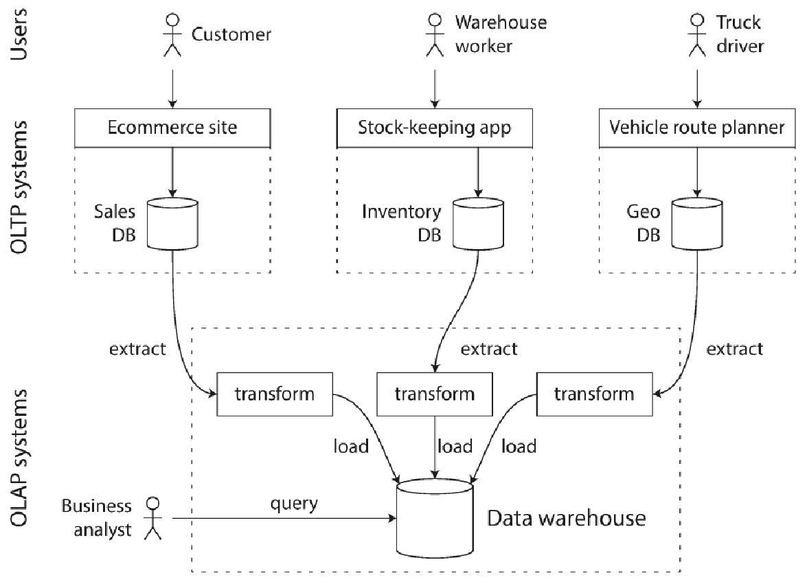
(dit moet je blijkbaar in grote lijnen kunnen tekenen op het examen)
Data mart

Een data mart voorziet snelle toegang tot een subset van de data en verlicht de belasting op de data warehouse.
Data flow
(in een data warehouse) je moet dit kunnen tekenen op het examen btw
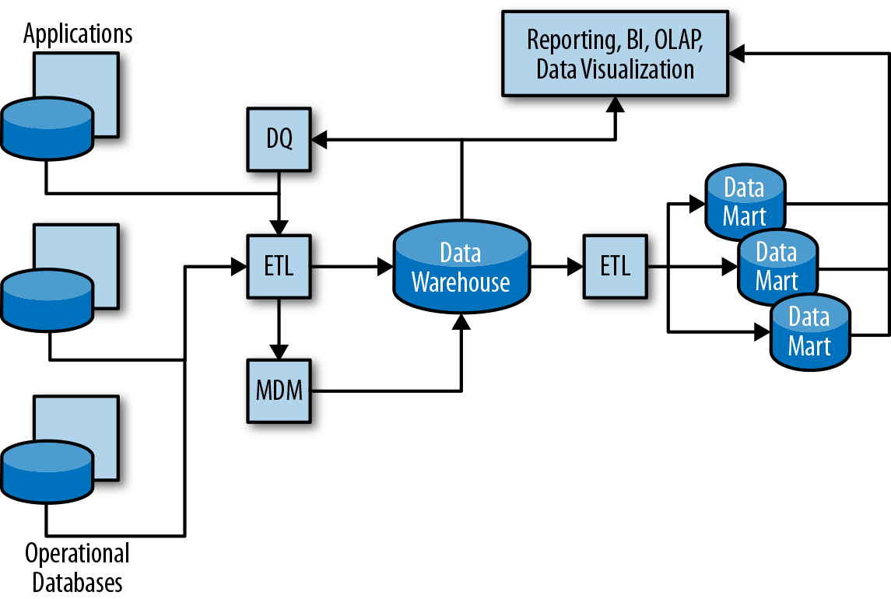
DQ: Data quality tools
- Definieren quality rules en passen deze toe op data om fouten te vinden en te verbeteren
- Zo wordt enkel data van goeie kwaliteit opgenomen
ETL: Extract-transform-load
MDM: Master data management systemen
- Maakt een master list voor alle entiteiten (klanten, producten, ...), detecteert wanneer meerdere records dezelfde identiteit zijn en fixt dubbelzinnigheden.
OLAP: Online analytical processing tools
BI: Business intelligence
Metadata flow
(in een data warehouse)
Metadata repositories
Bevatten technische metadata overheen data assets
3 use cases
- Data assets vinden
- Weten waar data vandaan komt
- Impactanalyse: we kunnen zien welke data assets afhangen van een bepaald veld alvorens een beslissing te maken
(op het examen kan gevraagd worden waarvoor metadata dient)
Data model
In het hart van de data warehouse wordt meestal een relationele databank gebruikt die geoptimaliseerd is voor analytische bewerkingen.
Operationele systemen
- Relationele databanken voor operationele systemen gebruiken meestal highly normalized data models
- Zo weinig mogelijk velden en redundantie om writes sneller te maken
Data warehouses
denormalized data models
Elke tabel bevat zo veel mogelijk gerelateerde attributen
- van verschillende bronnen met verschillende schemas (moet omgezet worden)
Gebruikt typisch een star schema
Star Schema
(leuk feitje: als je meerdere fact tables hebben spreken we van een fact constellation en heet het schema een galaxy schema)
Data warehouses gebruiken een star schema. Deze heeft de vorm van een ster, met in het midden een fact table en er rond dimensions. Examenvraag: leg het sterrenschema uit

Fact table
- Elke rij beschrijft een gebeurtenis op een bepaalde tijd
- Kan heel groot worden
- Sommige kolommen zijn attributen, zoals prijs ofzo
- Sommige kolommen zijn foreign keys naar dimensions
Dimensions
- een dimensie kan bijvoorbeeld het product zijn dat is verkocht (in de foto hieronder)
- datum en tijd worden vaak in dimensietabellen gezet, je kan dan bijvoorbeeld extra velden zoals
is_holidaytoevoegen om queries te vergemakkelijken. (de dimensietabellen voegen dus echt dimensie toe aan de data)

Slowly changing dimensions
Voorbeelden hiervan zijn: geografische locaties, klanten, or producten.
Een goed voorbeeld van wikipedia:
For example, a database may contain a fact table that stores sales records. This fact table would be linked to dimensions by means of foreign keys. One of these dimensions may contain data about the company's salespeople: e.g., the regional offices in which they work. However, the salespeople are sometimes transferred from one regional office to another. For historical sales reporting purposes it may be necessary to keep a record of the fact that a particular sales person had been assigned to a particular regional office at an earlier date, whereas that sales person is now assigned to a different regional office.
We gaan dus meerdere records aanmaken voor onze salespersoon zodat historische data ook klopt.
Op het examen kan je een voorbeeld gevraagd worden van een slowly changing dimension.
Column oriented storage
In OLTP databanken wordt alles meestal rij per rij opgeslagen ( [naam, leeftijd], [naam, leeftijd] ). Bij column-oriented storage gaan we per kolom alles samen opslaan ([naam, naam], [leeftijd, leeftijd] ). Als we willen weten hoe veel mensen er ouder zijn dan 18, hoeven we alleen de leeftijd kolom uit te lezen. (bij grote datasets spaart dit enorm veel rekenkracht)
ETL
Converteert verschillende representaties van onze data naar één dimensietabel. Dan moeten we zorgen dat hetzelfde record van verschillende systemen wordt gebruikt om een record te maken of te updaten in onze dimensietabel.
Dit heet een conforming dimension, hij heeft dezelfde ID overheen verschillende systemen. ETL haalt dus data van op verschillende plekken, fixt dat alles mooi samen past en maakt er een tabel van die we kunnen gebruiken voor onze analytische berekeningen.
ETL vs ELT
ELT: Extract-load-transform, de data wordt dus eerst in het datawarehouse ingeladen alvorens getransformeerd te worden.
Virtualized data warehouse
Simpel uitgelegd. We gaan virtueel schema maken dat onze data die verdeeld zit over verschillende systemen als een data warehouse voorstelt. Eigenlijk een soort view. Dit is handig als onze data heel vaak verandert en spaart ons de kosten van een datacenter.
Enkele nadelen zijn natuurlijk dat een gevirtualiseerde datawarehouse minder performant is. Of dat een wijziging in het schema ervoor kan zorgen dat je queries niet meer werken.
Data lake
- Gefocust op self-service
- Een meer flexibele versie van een data warehouse
- Omdat het zo flexibel is, is het wel moeilijk om te regelen wie aan welke data mag komen
If you think of a data mart as a store of bottled water – cleansed and packaged and structured for easy consumption – the data lake is a large body of water in a more natural state. The contents of the data lake stream in from a source to fill the lake, and various users of the lake can come to examine, dive in, or take samples
| Data Warehouse | vs | Data Lake |
|---|---|---|
| Structured, processed | DATA | Structured/semi-structured/unstructured/raw |
| Schema-on-write | PROCESSING | Schema-on-read |
| Duur voor grote datavolumes | STORAGE | Gemaakt voor goedkope opslag |
| Niet flexibel, vaste configuratie | AGILITY | Heel flexibel, gemakkelijk configuratie aanpassen |
| Mature | SECURITY | Maturing |
| Business pros | USERS | Data scientists |
(er kan op het examen gevraagd worden om een data warehouse te vergelijken met een data lake)
Data lake maturity
Data puddle
- vergelijkbaar met data mart, maar dan in deze context
Data pond
- verzameling van data puddles
Data lake
- Self service: business mensen kunnen data vinden zonder hulp van IT
- We willen hier data bijhouden die nuttig kan zijn voor business mensen, zelf als deze data niet gebruikt wordt in een project
Data ocean
- Self-service en beslissingen maken op basis van data van de hele organisatie
Succesfactoren van een data lake
Het moet schaalbaar en goedkoop zijn. Als we technologieën zoals Hadoop en AWS gebruiken, kunnen we ook flexibiliteit garanderen voor toekomstige veranderingen. De meeste data die wordt verzameld, wordt vaak weggegooid. Typisch komt maar een klein deel geaggregeerd terecht in een data warehouse. We willen data silos (dat elke afdeling zijn data hamstert) voorkomen, dus we gaan in een data lake gewoon zo veel mogelijk ruwe data van overal flikkeren, voor het geval dat we die misschien later nodig hebben.
Verder is het belangrijk dat onze data lake een goede interface heeft. Het moet gemakkelijk zijn voor business mensen om de data te vinden en te begrijpen. (verschillend voor analysten of data wetenschappers bijvoorbeeld)
Als je niet goed oplet en geen goeie faciliteiten voorziet voor je groeiende data puddle, kan je eindigen met een data swamp. Vol met duistere, onbruikbare data.
Setting up a data lake
Set up the infrastructure
- E.g. get the Hadoop cluster up and running
Organize the data lake
- Create zones for use by various user communities and ingest data
Set the data lake up for self-service
- Create catalogue of data assets, set up permissions and provide tools for analysts to use
Open data lake up to users
Organizing the data lake
(ik wou dit overslaan maar het is blijkbaar een potentiële examenvraag)

- Landing zone (raw zone): hier komt ruwe data toe en we willen die data zou dicht mogelijk bij de originele staat houden
- Gold zone (production zone): hier wordt clean, processed data gehouden
- Work zone (dev zone): hier wordt door devs en data scientists gewerkt aan de data. Als analytics van hier klaar zijn voor productie, worden ze naar de gold zone verplaatst
- Sensitive zone: bevat gevoelige data
Setting up for self service
Find and understand
- Rondvragen naar een dataset en zien of iemand iets weet en hopelijk iets vinden
- Dan uren spenderen met brol ontcijferen en tools gebruiken
Provision (get access to the data)
- Als we de juiste dataset hebben moeten we hem openstellen aan de analisten
- Ook gevoelige velden censureren of vervangen door dummy data
Prepare (clean and convert)
- Shaping: (Select, join, group by enzo)
- Cleaning: fouten eruit halen, missing values, ...
- Blending: verschillende datasets naar hetzelfde schema omzetten, zelfde eenheden enzo
Analyse (answer questions, create visualisations and report)
(eerste 3 stappen duren 80% van de tijd, de eerste 60%)
Data lake architecturen
Ze dachten eerst dat één grote on-premise data lake de ideale oplossing was. Het bleek beter te zijn om meerdere data lakes te hebben. Verschillende landen hebben bv. verschillende regels voor data. Je kan ook de complexiteit outsourcen naar bedrijven die daar beter in zijn door je data in de cloud te steken (Azure, AWS, google)
Data lake in public cloud
- zeer elastisch en goedkoop, je betaalt alleen wat je nodig hebt
- korte doployment tijd
Logical data lake
- een virtuele data lake (meer een soort catalogus of view van alle data die verspreid zit)
- zorgt ervoor dat je niet eerst je data in een echte data lake moet steken alvorens coole dingen te doen
- we brengen de data van ergens anders enkel naar de data lake wanneer we die nodig hebben, de data lake houdt enkel data bij die nergens anders beschikbaar is
Bij een logische data lake kan je kiezen tussen virtualization of catalog based. Bij virtualization maken we virtuele tabellen om een soort view (zoals in sql) te maken. Dit is niet altijd even simpel (veel verschillende schemas enzo, data moeilijk te vinden). Als we onze logische data lake catalog-driven maken, houden we metadata bij over elke data set (bv. waar we de data kunnen vinden) in een soort catalogus. Dit maakt alle data vindbaar en toegankelijk voor analisten.
H4 - Replication, partitioning and transactions
De eerste 10 slides: "Bedrijf X, groot getal, Petabytes, veel machines"
Jullie weten hopelijk ook het verschil tussen horizontal scaling en vertical scaling. Bij horizontal scaling in een cloud-based context heb je het voordeel van transfer of risk. Je moet niet bang zijn dat in je datacenter de stroom uitvalt, want de datacenters van google hebben basically ieder hun eigen kernreactor.
Replication
(Examenvraag; Waarom moeten we data repliceren?)
Door data te repliceren verlagen we de latency, en verhogen we de availability en throughput. Het probleem bij replicatie is dat de data constant verandert.
Hiervoor gebruiken we:
Leaders and followers
(Op het examen wordt sowieso één van deze figuren gevraagd)
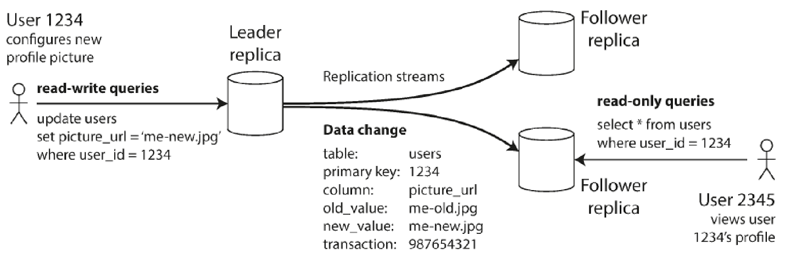
De leader neemt writes aan en voert deze dan door aan de followers. Op de followers kan je alleen reads doen.
Sync vs async replication
Op het examen kan je gevraagd worden om synchrone en asynchrone replicatie te tekenen of om uit te leggen wat er gebeurt in de figuur. Hij kan je ook vragen om dit toe te passen op een voorbeeld. Stel je voor, je wilt Netflix kijken en je klikt op een film. Als netflix gebruik maakt van asynchrone replicatie kan het dat de film net is verwijderd, maar nog steeds op je home screen staat. Netflix maakt bewust de keuze om niet direct de UI te updaten om resources te sparen, met de kans dat dat heel af en toe een gebruiker teleurgesteld gaat zijn.

Synchrone replicatie
- leader wacht op een oke van de follower alvorens aan de user door te geven dat de write geslaagd is
- Het is dus gegarandeerd dat de follower up to date is
- Als de follower niet antwoordt ben je genaaid
Asynchrone replicatie
- de leader wacht niet op bevestiging van de follower
- als de leader kapot gaat, zijn de writes die nog niet doorgevoerd zijn verloren
- de leader kan wel blijven writes verwerken, ookal lopen de followers achter
Om een nieuwe follower toe te voegen nemen we een snapshot uit het verleden (om de leader niet te moeten blokkeren) van de leader. Dan zetten we deze snapshot op de follower en moeten we alleen de wijzigingen sinds de snapshot van de leader naar de nieuwe follower overzetten.
Handling node outages
Bij followers
- Elke follower houdt een log van data changes bij
- als hij uitvalt, kan hij wanneer hij terug aan is gewoon de wijzigingen sinds zijn nieuwste change opvragen
Bij de leader (failover)
- Eén van de followers wordt de nieuwe leader (kan handmatig of automatisch met een timeout en election process ofzo)
Problemen
Failover
Als een follower tot leader wordt gepromoot, kan het bij async dat nog niet alle writes van de oude leader doorgevoerd waren
- Als de oude leader terugkomt, kan hij beter die niet gerepliceerde writes wegsmijten om conflicten te vermijden
Split brain: als twee nodes denken dat ze de leader zijn
We moeten ook een juiste timeout hebben voordat we de leader dood verklaren
Replication lag
- als je veel reads hebt in je app gebruik je best async replicatie
- het probleem is dan dat je vaak reads hebt op verouderde data
Replication lag
Reading your own writes
(dit moet je blijk baar ook kunnen uitleggen op het examen)

Als je je eigen write wilt lezen, kan het dat deze nog niet is doorgevoerd naar de follower waar je dit record opvraagt. We hebben dus read after write consistency nodig. Als een user een verandering maakt, moeten we ervoor zorgen dat als hij iets opvraagt dat hij heeft verandert ook direct wordt weergegeven. De client houdt een timestamp bij van wanneer hij de write heeft gedaan. Wanneer hij dan de write opvraagt, wordt gecheckt of de followers al aan die timestamp zitten, anders haalt hij de data bij de leader. Dit wordt nog moeilijker wanneer de user meerdere devices gebruikt (gsm, laptop, smart fridge)
Monotonic reads
We moeten ervoor zorgen dat als een user meerdere reads maakt, hij niet terug in de tijd leest door de tweede read bij een follower te doen die nog meer achter zit. We moeten er dus voor zorgen dat elke user van dezelfde replica blijft lezen.

Consistent prefix reads
= ervoor zorgen dat reads in dezelfde volgorde als writes gebeuren. De afbeelding toont hoe het fout kan gaan.

Multi-leader replication
- meer dan één leader
- wordt gebruikt in multi-datacenter configuraties
| Single leader | vs | Multi-leader |
|---|---|---|
| Elke write moet over het internet naar het datacenter van de leader | Performance | we gebruiken de locale leader, die dan de writes asynchroon doorgeeft aan de andere leaders |
| Als de leader uitvalt, kunnen we een follower in een ander datacenter promoten tot leader | Outage tolerance | Elk datacenter is onafhankelijk, replicatie kan de achterstand inhalen wanneer het datacenter terug online komt |
| Gevoelig aan problemen in de verbinding tussen datacenters, want writes moeten synchroon naar de leader gestuurd worden | Netwerkproblemen | Tijdelijke netwerkproblemen voorkomen niet dat writes naar de lokale leader geschreven worden |
| basically alles hierboven | Nadelen | Write conflicts, als dezelfde data in twee datacenters aangepast wordt, hebben we een probleem. Multi-leader is ook gewoon ingewikkelder. |

Manieren van multi-leader infrastructuren te organiseren
Leaderless replication
Ook gekend als Dynamo style. De write wordt door de client of een coördinator naar meerdere replicas gestuurd.
Wanneer een node offline gaat:
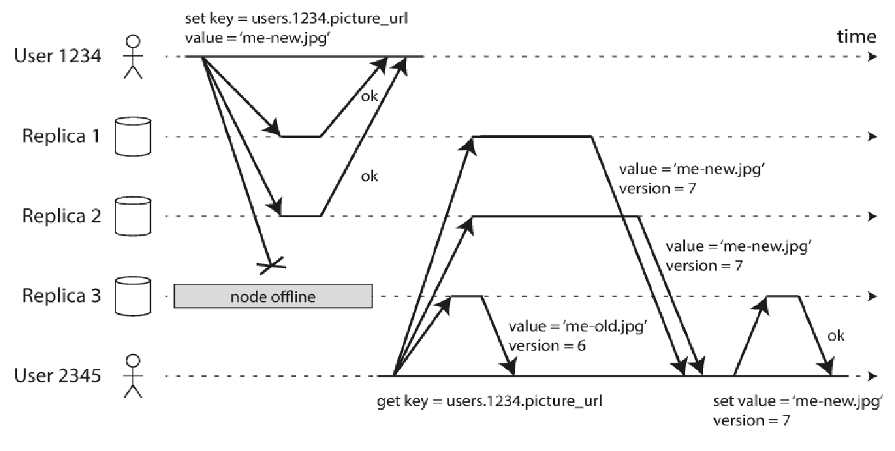
De read wordt naar 3 nodes gestuurd waarvan eentje down is. Als de client nu leest van replica 3 gaat hij oude data krijgen. We gaan dus de client ook van meerdere replicas laten lezen. (deze foto is ooit op een examen gevraagd)
Read repair en anti entropy

Als een uitgevallen node terug online komt moeten we zorgen dat hij terug up-to-date raakt. Dit kan op twee manieren:
- Read repair: de client van altijd van meerdere replicas laten lezen, als hij dan ziet dat er eentje achter loopt, stuurt hij een write naar die replica om hem te updaten
- Anti entropy process: een achtegrondproces dat constant de replicas met elkaar vergelijkt en dingen update waar nodig
Partitioning
Voor hele grote datasets waar veel queries op gedraaid worden. Wordt meestal gecombineerd met replication.
Partitioning of key-value data
We willen ervoor zorgen dat de data even verspreid zit over de nodes. We kunnen de data random verspreiden, maar dan is het moeilijk om iets terug te vinden. De oplossing is om de data in ranges op te splitsen. We kunnen zelfs de ranges bepalen op basis van een hash van de key. Alleen worden dan queries die een range afgaan trager. De oplossing hiervoor is om samengestelde primary keys te gebruiken. We hashen dan één sleutel en de anderen kunnen dan als index gebruikt worden voor queries.
Hot spots
Voor keys die heel vaak gebruikt worden (celebrities ofzo), kunnen we een random nummer voor de key zetten om de load te verdelen over de verschillende partities.
Secondary indexes
Soms zoeken we een record niet op primary key, maar op iets anders. Deze zitten dan niet mooi verdeeld per partitie. We kunnen dit oplossen met:
Document based partitioning
(hier is ooit een examnvraag over geweest)
Een secundaire index per partitie. Je moet dan de query sturen naar alle partities en de resultaten samenvoegen.
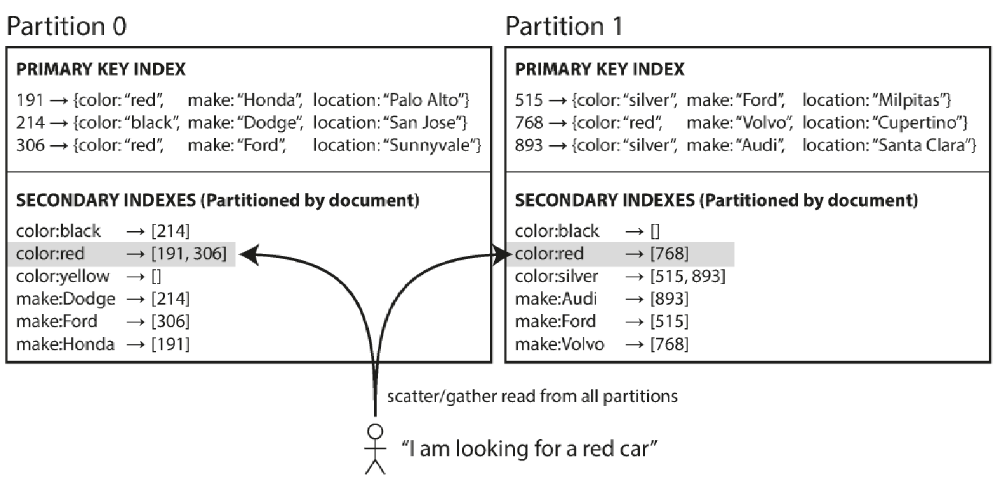
of met:
Term based partitioning
Een globale index overheen alle partities. De index zelf moet dan ook gepartitioneerd worden. Writes zijn dan minder efficiënt, maar reads zijn sneller. De index is ook niet altijd up to date.
Rebalancing
(dit is ooit gevraagd op een examen)
Soms veranderen dingen en worden sommige nodes meer belast. We moeten dan de workload en de data herverdelen over de nodes. Dit heet rebalancing.
Strategieën:
Niet hashen met mod n, want als n verandert moeten we heeeel veel data verplaasen
Veel meer partities maken dan nodes, dus meerdere partities per node
- als er een nieuwe node komt kan hij een paar partities van iedereen overnemen
Dynamic partitioning
- Wanneer een partitie groeit, hem splitsen als hij te groot wordt (omgekeerd als hij krimpt
Partitioning proportionally to nodes
- Vast aantal partities per node
- als een nieuwe node komt, splitst hij een vast aantal random partities en neemt hij die helft voor zich
Request routing
Hoe weet een client met welke node hij moet verbinden.
De client naar alle nodes laten sturen
Een soort router hebben waarnaar de client een request stuurt
- Bijvoorbeeld zookeeper: die heeft dan kennis van alle nodes en verwijst het request door naar de juiste node
De client kennis laten hebben van de partitionering
Transactions
Er gaan vaak dingen mis, dus we kunnen meerdere reads en writes samenvoegen in een transactie. Als deze lukt heb je een commit en als hij faalt heb je een rollback. Dit zorgt ervoor dat we ons geen zorgen moeten maken om gedeeltelijke fouten. (het is wel een beetje trager)
De garanties van een transactie worden beschreven door ACID:
A: atomicity: als een transactie faalt zijn we zeker dat er niks is aangepast
C: consistency: we weten zeker dat de database voor een na de transactie valid is
I: isolation: transacties die tegelijk draaien zijn geisoleerd van elkaar
D: Durability: als een transactie gedaan is weten we dat de data blijft waar hij is
Om te garanderen dat twee transacties wanneer ze op hetzelfde moment draaien hetzelfde effect hebben als wanneer ze na elkaar draaien, kunnen we onze isolation serializable maken. Er zijn nog andere isolatieniveaus, zoals read committed. Dit is het laagste niveau we kunnen alleen committed data lezen en schrijven van de db (no dirty reads en writes). Om dit te implementeren moet een transactie als hij een rij wilt aanpassen eerst een lock krijgen op deze rij, een row-level lock genaamd.
- Dirty read: een read die een niet-gecommitte waarde leest
- Dirty write: een write die een niet-gecommitte aangepaste rij overschrijft
H5 - Batch processing
Apache hadoop
Een framework voor het gedistribueerd verwerken en opslaan van datasets
(je moet deze tabel blijkbaar op het examen blijkbaar in eigen woorden kunnen uitleggen)
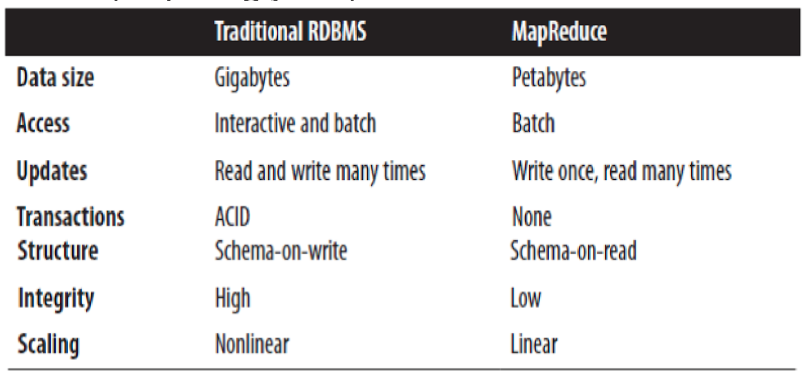
Mapreduce is nuttig wanneer we één keer schrijven en dan heel vaak moeten lezen. Relationele databanken zijn beter als je constant dingen moet updaten. Bij mapreduce is het schema ook niet zo strict als bij een relationele databank.
Mapreduce basics
Divide & conquer
- divide: dataset verdelen in kleine stukken (map)
- conquer: data van vorige stap mergen of aggregeren (reduce)
Volgt vaste stappen:
Sequentially read (a lot of) data
Map
- Extract key, values you care about
Group by key: sort and shuffle
Reduce
- Aggregate, summarize, filter or transform
Write result
Master node
De master node coordineert de hele boel en stuurt pings naar nodes om failures te detecteren.

Voor- en nadelen
Voordelen:
- Model gemakkelijk te gebruiken verbergt complexiteit van parallelisatie en fault recovery
- Veel problemen kunnen omgezet worden in een MapReduce operatie
- Schaalt naar heeeel veel machines
Nadelen
- 1 input tweetraps dataflow zit vastgebakken in het systeem
- Je hebt extra code nodig voor veel simpele operaties (bv. Filtering)
- Moeilijk om te optimaliseren wegens intransparantie van MapReduce functies
Examenvraag: geef een voorbeeld van MapReduce.
uit de slides:
There is a set of items and some function of one item. It is required to save all items that have the same value of function into one file or perform some other computation that requires all such items to be processed as a group. The most typical example is building of forward indexes.
The solution is straightforward. Mapper computes a given function for each item and emits value of the function as a key and item itself as a value. Reducer obtains all items grouped by function value and process or save them. In case of forward indexes, items are terms (words) and function is a document ID where the term was found.
HDFS
Hadoop Distributed File System

Data wordt in chunks opgedeeld en verdeeld over meerdere servers. Dit wordt veel gebruikt bij grote datasets waar niet veel wordt geüpdatet. Een master node (NameNode) houdt metadata bij over waar data te vinden valt.
Een client wilt data uitlezen bij HDFS (is blijkbaar iets dat je moet kunnen uitleggen op het examen):

- Client opent file
- NameNode weet locatie van de blokken van het bestand en rangschikt ze op afstand
- Client ontvangt een inputstream object (om abstractie te maken van het lezen van verschillende nodes)
Schrijven naar HDFS:

- Client maakt file door create op te roepen
- NameNode maakt een record van nieuwe file
- Client ontvangt outputstream (opnieuw om abstractie te maken van de blokken)
Mapreduce advanced features
Backup tasks
Soms maken sommige delen van het systeem een taak traag. We kunnen om de taak sneller te maken hem gewoon meerdere keren starten. De eerste taak die dan eindigt is de winnaar. Dit versnelt onze taken gemiddeld, maar kost wel meer resources.
Combiners
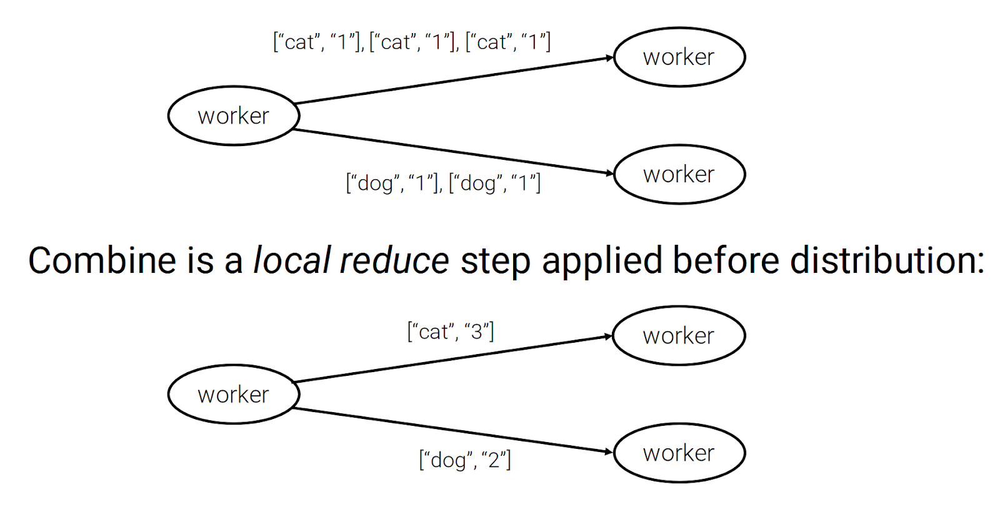
Een combiner kan bandbreedte sparen door na de map-stap eigenlijk al een beetje van de reduce uit te voeren op de node waar de map op wordt uitgevoerd.
Custom partition function
De standaard hashfunctie is hash(key) mod R, met R het aantal reducers. We kunnen die functie overriden als we willen dat de keys anders verdeeld worden over de reducers.
Joins
Joins zijn kut in MapReduce. Als ik nog zin heb schijf ik hier nog wat meer //TODO
Apache hive & pig
Hive
Data warehouse software met een SQL achtige interface om data te analyseren op Hadoop HDFS enzo.
Pig
Scripttaal om programmas te maken die draaien op apache Hadoop.
We moeten deze talen niet kennen ofzo dus hier hou ik het bij.
Apache spark
Jullie hebben allemaal met spark gewerkt.
RDD: Resilient Distributed Dataset
Filter: transformation returning a new RDD with a subset of the items in the original RDD (matching the filter parameter)
| Spark | vs | Hadoop MapReduce |
|---|---|---|
| In-memory (is sneller, maar wel duurder want ram is duur) | Processing | On disk |
| Beter voor iteratieve taken | Jobs | Beter voor one-pass big data jobs |
| RDD herberekenen voor gefaalde partitie | Fault tolerance | Intermediate files worden als checkpoints gebruikt |
| Spark streaming | Streaming | |
| Real-time in memory processing voor datasets waarbij dat nodig is | Beter voor | Voor gedistribueerde bestandssystemen en het processen van grote, statische datasets (bv. Extract-transform-load) |
(ep het examen moet je het verschil tussen de twee kunnen uitleggen)
H6 - Stream Processing
Stream processing
Stream processing zit een beetje tussen online en offline batch processing. Het consumeert een inputs en levert outputs. De focus ligt op het real-time gebeuren. In tegenstelling tot batch processing, hebben we met stream processing typisch een lage latency. Er komt continu data binnen, die snel, 24/7 gedistribueerd verwerkt kan worden.
Use-cases
Verkeersvoorspelling
Beveiliging
- Real-time sim kaart fraudedetectie
Industrie
- Real-time analyse en voorspellingen voor productie en problemen
...
Messaging
Bij streaming wordt een event gegenereerd bij een producer, en vervolgens verwerkt door mogelijk meerdere consumers. Het event wordt dus gepushed naar een bepaalde topic (een logisch kanaal om events te groeperen) zodat de juiste consumers berichten kunnen ontvangen op die topic. Hoe het systeem geïmplementeerd wordt hangt af van twee vragen.
Wat gebeurt er als producers sneller sturen dan de consumers aankunnen?
- Droppen
- In een queue zetten
- Backpressure (tegen producer zeggen van yo mattie doe rustig)
Wat als nodes crashen, messages kwijt?
- Als we dit willen voorkomen moeten we replicatie enzo doen
- Als het niet echt boeit als we is een paar events kwijt zijn, kunnen we door dit niet te doen de snelheid hoog houden
Direct messaging systems
Veel messaging systemen gebruiken een directe internetverbinding tussen producers en consumers. Sommige frameworks gebruiken udp multicast, sommigen tcp of ip multicast. Als een consumer openstaat op een netwerk, kunnen producers typisch rechtstreeks een request sturen wanneer ze een event genereren. Dit noemt men het webhook patroon.
Message broker
(op het examen kan gevraagd worden om een broker uit te leggen)
Een alternatief voor direct messaging. Een message broker is een soort manager die die de rol van een queue aanneemt om orde te maken in chaos. Als er te veel berichten zijn worden ze typisch in een queue gezet (niet gedropt). Je kan messages dan gaan opslaan in een log (een append-only sequentie van records op een disk). De producer voegt dingen toe op het einde van de log en de consumer leest de log sequentieel uit. Als onze log niet op één disk past, kunnen we gaan partitioneren. Dit maakt bijgevolg ons systeem ook sneller.
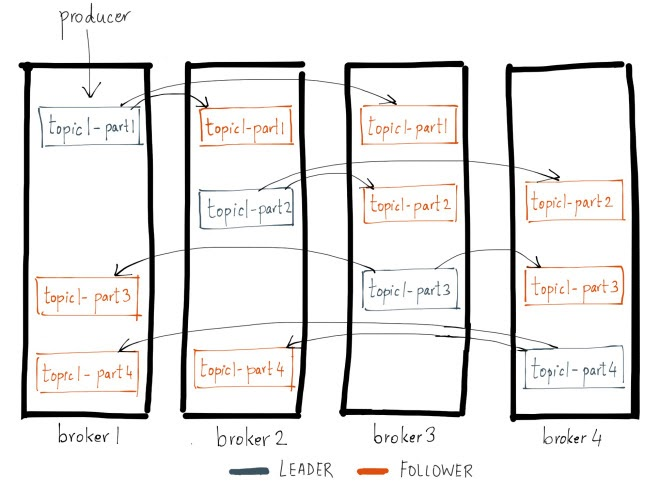
(deze afbeelding moet je ook kunnen voor op het examen) Zo te zien worden onze topic niet alleen gepartitioneerd, maar ook gerepliceerd.
Apache Kafka
kafkaiaans - Bijvoeglijk naamwoord
- lijkend op het gevoel en de sfeer in de boeken van w:Franz Kafka|Franz Kafka; met een zinloze, desoriënterende en nachtmerrieachtige complexiteit ♢ Hij voelt zich de onvrijwillige hoofdrolspeler in een kafkaiaans drama.
Deze afbeelding toont vrij duidelijk wat Kafka doet:
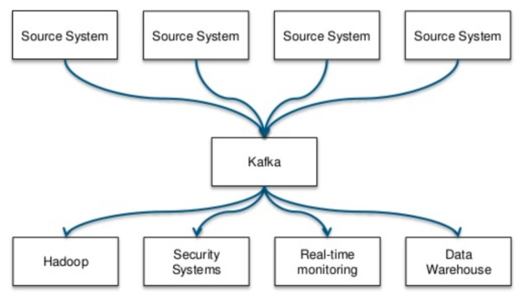
Onderdelen van Kafka
Het voornaamste aan Kafka is dat het gewoon super snel en betrouwbaar is. Je kan duizenden writes per seconde verwerken op een enkele node. Je gaat Kafka typisch draaien op een cluster, dus dan kan je echt gekke dingen beginnen doen.
Topics zijn logische categorieën die een stream van records bevatten van de vorm (key, value, timestamp). Als we Kafka goed willen gebruiken, splitsen we de topics op in gerangschikte commit logs, genaamd partitions. De volgorde wordt enkel gegarandeerd binnen een partitie (oplossen door één consumer per partitie aan te stellen). Kafka topics geven wel een aantal leuke garanties. Berichten verzonden door een producer worden aan de topic toegevoegd in de volgorde waarin ze verstuurd zijn. Bij
Producers genereren een stream van records en pushen die naar een topic. We kunnen het werk verdelen door records op basis van hun key te verdelen over de hiervoor aangehaalde topic partitions, want we willen ervoor zorgen dat de consumer altijd mee is om het gebeuren zo real-time mogelijk te houden.
Consumers verwerken de berichten van de producers door te subscriben op een topic. Meerdere consumers kunnen van dezelfde topic lezen.
Connectors verbinden de topics met bestaande applicaties of systemen. Zo kan je bijvoorbeeld een RDB die alle veranderingen opslaat verbinden met een connector.
Stream Processors verwerken input stream vanuit één of meerdere topics en sturen een output naar één of meerdere topics. een stream is een onbegrensde dataset die continu wordt geupdate. Een stream processor doet typisch één bepaalde operatie op de input alvorens hem door te sturen.
Kafka streams
| Voordelen | Nadelen |
|---|---|
| Heel lightweight, good voor microservices en IoT | Ligt nauw samen met Kafka |
| Exactly once* | Relatief nieuw |
| Heeft alle goede eigenschappen van Kafka | Niet goed voor zware data processing zoals Spark Streaming of Flink |
| Ondersteunt stream joins en kan een state bijhouden |
* in tegenstelling tot at least once of at most once (lijkt me een goede examenvraag om het verschil uit te leggen)
Apache Storm
Apache Storm werkt met tuples en is ook weer snel, betrouwbaar, schaalbaar en fault tolerant. Een stream in Storm is dus gewoon een sequentie van tuples.
De Spout is de bron van de streams. (Kan bv. kafka zijn). Een Bolt ontvangt een tuple en verwerkt hem. Bolts kunnen lezen en schijven uit data stores en berekeningen uitvoeren. Spouts en bolts zijn individuele taken en kunnen parallel op verschillende machines draaien.

Storm heeft een aantal ingebouwde betrouwbaarheidsmaatregelen. Als een tuple niet wordt gemarkeerd als verwerkt binnen een bepaalde time-out, begint de tuple opnieuw bij de spout. We zijn zeker dat elke tuple minstens één keer wordt verwerkt. (at least once processing)
Apache storm trident
Een micro-batch systeem gebouwd bovenop Storm met support voor vensterfuncties en aggregaties. Trident doet aan exactly-once processing, en heeft bijgevolg wel een hogere latency dan Storm op zichzelf.
Storm voor- en nadelen
| Voordelen | Nadelen |
|---|---|
| Lage latency, true streaming, is 'mature' en hoge doorvoer | Er kan niet eenvoudig een state bijgehouden worden |
| Heel goed voor simpele streaming use-cases | Geen advanced features zoals vensterfuncties en aggregaties |
| Alleen at least once garantie |
Apache Heron
Is de opvolger van Apache Storm en introduceert een paar verbeteringen. Er is ingebouwde ondersteuning voor back pressure, debuggen is makkelijker. Heron gebruikt ook veel minder resources dan Storm. Een belangrijke verbetering is dat je nu kan kiezen tussen at most once, at least once en exactly once processing.

Blijkbaar moet je dit kunnen uitleggen op het examen. Hoe? Geen idee.
Heron applicaties kan je op verschillende manieren schrijven
- Low-level API: rechtstreeks procedureel spouts en bolts schrijven
- Mid-level API: functioneel programmeren met maps, flat maps, transform en windows
- High-level API: met een declaratieve taal zoals SQL zeggen 'wat', dan maakt het systeem zich zorgen om de 'hoe'.
Apache Spark Streaming
Spark Streaming verdeelt een stream in microbatches per interval. Elke microbatch wordt behandeld als een RDD (resilient distributed dataset). Het coole is dat je alle functionaliteit van spark hierop kan gebruiken.
Examenvraag: Spark Streaming vs Storm
| Spark Streaming | Storm |
|---|---|
| Events per microbatch, gegroepeerd per interval (dus geen true streaming) | Streaming per event (micobatch gaat met trident) |
| Exactly once | at least once (exactly once met trident) |
| Voor fault-tolerance en betrouwbaarheid heb je een HDFS-backed data source nodig (geeft latency). Network data sources zijn kwetsbaar voor data loss als een node uitvalt. | Betrouwbaarheid hangt af van de spouts. Als die goed zijn verliezen we geen data. (best Kafka gebruiken voor spouts) |
| Performance hangt af per geval. Typische latency in seconden. | Performance hangt af per geval. Typische latency in tientallen milliseconden. |
| Kan gedeployed worden op YARN of Kubernetes | Kan gedeployed worden op YARN of Mesos (kubernetes gaat ook maar dan gebruik je best Heron) |
nogmaals:
At least once delivery means that for each message handed to the mechanism potentially multiple attempts are made at delivering it, such that at least one succeeds. Messages may be duplicated but not lost.
Exactly once delivery means that for each message handed to the mechanism exactly one delivery is made to the recipient, the message can neither be lost nor duplicated.
Spark streaming voor- en nadelen
| Voordelen | Nadelen |
|---|---|
| Hoge throughput | Geen true streaming, dus niet goed als je lage latency nodig hebt |
| Fault tolerance | Veel parameters die je moet afstellen |
| High leven APIs | Stateless |
| Grote community met snelle uitbreidingen | Loopt achter op apache flink in advanced features |
| Exactly once |
Apache Flink
Distributed streaming met exactly once reliability. Flink werkt met streams en transformations. Streams kunnen bounded (met begin en einde) of unbounded (enkel start) zijn. Transformations nemen één of meerdere streams als input en produceren één of meerdere output streams. Noemenswaardig is dat Flink stateful is, met hoge fault tolerance door het gebruik van lightweight gedistribueerde checkpoints.
Flink voor- en nadelen
| Voordelen | Nadelen |
|---|---|
| Leader of innovation in open source streaming | Een laatkomer in het streaming gebeuren, daardoor initieel minder gebruikt |
| True streaming framework met advanced features | Kleinere community dan spark |
| Auto-adjusting and niet te veel parameters die je moet afstellen | |
| Exactly once | |
| Grote operationele deployments (Uber, Alibaba) |
Spring cloud data flow
Spring cloud data flow is een processing pipeline die gebruik maakt van Spring boot microservices. Elke microservice neemt een bericht en produceert een bericht met de data die je aan het verwerken bent.
Kleine rant, ik krijg echt de tering van spring boot.
Data processing pipeline
We willen zelf een data processing pipeline maken. We nemen als voorbeeld een systeem dat het gebruik van hashtags in real-time bijhoudt. Hoe doen we dat?
Eerst moeten we de source data begrijpen, wat zit er in één message (een tweet dus). We moeten de functie van onze pipeline begrijpen (de hashtags uit een tweet filteren). We moeten begrijpen wat we willen meten (real-time analytics op wat trending is). Wat is de output? (het aantal keren dat elke hashtag wordt gebruikt per seconde). Wat is het resultaat van onze metingen? (Real time streaming analytics om geïnformeerde beslissingen te maken en een grafiek die de snelheid van elke tweet en zijn hashtags over tijd toont)

- Tweet source (data): we halen data van verschillende bronnen (HDFS, REST API, ...) en transformeren deze tot een discrete stream van messages en sturen deze naar een output channel.
- Filter: doet wat het betekent en filtert noise om de kwaliteit van metingen in de volgende modules te verbeteren
- Processor: neemt gefilterde stream van messages en kan meerdere outputs genereren. (voor elke tweet voor elke hashtag een message bv)
- Counter: geeft een increment op meerdere buckets als output en slaat het resultaat op in een sink (bv. Database)
We kunnen de services in de pipeline omhoog en omlaag stalen afhankelijk van de belasting van het systeem:

Apache beam
Eén platform om batch en streaming te kunnen doen. Dan zit je niet vast (platform lock-in).
Apache Nifi
Web-based visueel beheer van data flows.

Hoe kies ik het juiste framework?
Hangt af van de use-case
Hou rekening met de toekomst
- Storm weet niks af van state
- Heb je misschien meet geavanceerde features nodig? (aggregatie, ...)
Wat gebruikt je al?
Kafka?
- Dan is Kafka streams makkelijk te implementeren
Spark?
- Spark streaming
H7 - Data processing architectures
Lambda architectuur
Je moet deze figuur zeker kennen voor op het examen.
De streaming layer (speed layer) handelt alle requests af waarvoor lage latency vereist is en werkt alleen met recente data om een real-time view te voorzien. Zijn output wordt typisch in een NoSQL db opgeslagen. De views op deze laag zijn niet zo accuraat en volledig als die van de batch layer. De batch layer beheert de master dataset (met alle data dus). Deze is typisch een gedistribueerde, raw, append-only dataset. In deze laag wordt alle data verwerkt om een view te produceren, die dan weggeschreven wordt naar een read-only db. De serving layer geeft ons dan output (d.m.v. queries) van zowel de streaming als de batch layer.
We zien al direct een paar dingen die mislopen. We moeten eigenlijk dubbel werk doen, want in onze serving layer moet code geschreven worden om zowel de streaming als de batch layer te ondersteunen. Verder is het ook gewoon moeilijk om twee complexe gedistribueerde systemen te onderhouden. We onthouden dus dat de lambda architectuur niet meer gebruikt wordt en dient als voorbeeld, waaruit later betere architecturen uit zijn voortgebracht.
Spring XD maakte gebruik van de lambda architectuur, maar is nu discontinued. Zijn opvolger is de eerder vermelde Spring Cloud Data Flow.
Kappa Architectuur
Ik ben bijna 100% zeker dat onze Bruno ons één van deze architecturen gaat laten uitleggen op het examen.

De kappa architectuur is een versimpeling van de lambda architectuur. Kortaf, we yeeten het batch processing gedeelte en we zorgen ervoor dat onze streaming layer ook kan werken met historische data. We gaan onze data typisch weeral in een append only immutable log steken (zoals Kafka ofzo), zodat we alles bijhouden. Dan doen we onze streaming met Apache Storm, Spark Streaming, ... We moeten dus geen meerdere (streaming) codebases onderhouden door het weglaten van de batch processing.
Als we data willen reprocessen, starten we gewoon een stream processing job, maar vanaf het begin van onze data. Wanneer deze de oude job inhaalt kunnen we gewoon switchen en de oude ditchen (hihi dat rijmt).
De Kappa architectuur heeft 4 pilaren:
- Data is immutable
- Everything is a stream
- Single stream engine is used
- Data can be replayed
Je moet alleen maar aan reprocessing doen als je de processing code hebt gewijzigd. Dit neemt dan wel even wat meer geheugen in beslag.
Apache Samza
Maakt gebruik van de Kappa architectuur en is gemaakt voor snelle, bijna real-time processing. Samza heeft ook ingebouwde ondersteuning voor het bijhouden van een state, is super schaalbaar, fault tolerant en heeft APIs op meerdere niveaus.
| Voordelen | Nadelen |
|---|---|
| Goed in grote states van informatie bijhouden (nuttig om streams te joinen) | Nauw gebonden met kafka en yarn |
| Fault tolerant en hoge performantie dankzij kafka | At least once |
| Is de natuurlijke keuze als je al yarn en kafka gebruikt | Geen advanced streaming shizzle zoals watermarks en triggers enzo |
| Low latency, hoge doorvoer, mature en getest op grote schaal |
Zeta architectuur

Zeta is 7 in het grieks, we hebben dus 7 hoofdcomponenten (die je flink op het examen gaat opnoemen met de tekening):
- Enterprise applications
- Solution architecture
- Compute model / execution engine
- Distributed file system
- Real-time data storage
- Container system
- Global Resource Management
Alle servers worden overzien door de global resource management, ze doen ook allemaal mee in de distributed filesystem, waardoor we onze data van eender waar in de cluster kunnen halen. Het alloceren van resources (meer web servers starten, big data analytics) gebeurt dynamisch. Verder is in Zeta data lokaliteit een belangrijk punt, we gaan de data processen waar hij aangemaakt wordt. Door deze versimpelde architectuur kunnen we beter gebruik maken van onze resources en geld uitsparen. We maken van gebruik van containers om herhaalbaarheid tussen environments (dev, prod, ...) te creëren .
MAPR
Maakt gebruik van de Zeta architectuur en kan blijkbaar 15 miljard 100 byte records sorteren in 59 seconden. Het doel van dit framework is ondersteuning voor batch, interactive streaming en real-time applicaties te combineren.
Wat doen de grote bedrijven?
- Google cloud dataflow
- Microsoft Azure HDInsight
- Microsoft Azure stream analytics
- Microsoft data lake store
- Amazon EMR (elastic mapreduce)
- Amazon kinesis
- Amazon lambda - serverless architecture
- Hortonworks + Cloudera
Je moet gewoon oppassen dat je jezelf niet vastzet in een proprietaire oplossing. Als je iets schijft dat werkt met azure kan je zeker wezen dat microsoft je tot de laatste cent gaat uitmelken.
Dit gezegd zijnde, komen we tot het einde van deze monsterlijk grote samenvatting.
Examenvragen
Een handige compilatie van dingen die onze Bruno heeft vermeld in de les als mogelijke examenvragen, lichtjes aangerijkt met mijn fantasie. Je kan op de driehoekjes klikken om het antwoord te tonen.
Wat zijn de 3 voornaamste eigenschappen van een goed systeem? Geef een korte verklaring.
Antwoord
Reliability: het systeem moet correct blijven werken, zelfs er er zich *faults* voordoenScalability: er moeten manieren voorzien zijn om ermee om te kunnen gaan als de grootte van ons systeem toeneemt
Maintainability: het systeem moet gemakkelijk zijn om draaiende te houden, gemakkelijk zijn om te begrijpen, en gemakkelijk zijn om in de toekomst veranderingen in aan te brengen
Wanneer zou ik kiezen voor een relationeel of een document datamodel?
Antwoord
Document: als de data veel one-to-many relaties bevat (in een boom die typisch volledig gevuld is)Relationeel: als de data many-to-many relaties bevat
Maak een schets van de extract-transform-load procedure in een datacenter, duid de stappen aan op de tekening.
Antwoord
Gegeven deze figuur van de data flow in een data warehouse. Leg uit.
Antwoord
DQ: Data quality toolsDefinieren quality rules en passen deze toe op data om fouten te vinden en te verbeteren Zo wordt enkel data van goeie kwaliteit opgenomen ETL: Extract-transform-load
MDM: Master data management systemen
Maakt een master list voor alle entiteiten (klanten, producten, ...), detecteert wanneer meerdere records dezelfde identiteit zijn en fixt dubbelzinnigheden. OLAP: Online analytical processing tools
BI: Business intelligence
Geef 3 use-cases van metadata in een data warehouse.
Antwoord
Data assets vindenWeten waar data vandaan komt
Impactanalyse: we kunnen zien welke data assets afhangen van een bepaald veld alvorens een beslissing te maken
Leg het sterrenschema uit.
Antwoord
Data warehouses gebruiken vaak een star schema. Deze heeft de vorm van een ster, met in het midden een fact table en er rond dimensions.Fact table
Elke rij beschrijft een gebeurtenis op een bepaalde tijd
Kan heel groot worden
Sommige kolommen zijn attributen, zoals prijs ofzo
Sommige kolommen zijn foreign keys naar dimensions
Dimensions
een dimensie kan bijvoorbeeld het product zijn dat is verkocht (in de foto hieronder)
datum en tijd worden vaak in dimensietabellen gezet, je kan dan bijvoorbeeld extra velden zoals is_holiday toevoegen om queries te vergemakkelijken. (de dimensietabellen voegen dus echt dimensie toe aan de data)
Geef een voorbeeld van een slowly changing dimension.
Antwoord
De naam van een klantWe vergelijken een data lake met een data warehouse, vul aan.
| Data Warehouse | vs | Data Lake |
|---|---|---|
| DATA | ||
| PROCESSING | ||
| STORAGE | ||
| AGILITY | ||
| SECURITY | ||
| USERS |
Antwoord
| Structured, processed | DATA | Structured/semi-structured/unstructured/raw || Schema-on-write | PROCESSING | Schema-on-read |
| Duur voor grote datavolumes | STORAGE | Gemaakt voor goedkope opslag |
| Niet flexibel, vaste configuratie | AGILITY | Heel flexibel, gemakkelijk configuratie aanpassen |
| Mature | SECURITY | Maturing |
| Business pros | USERS | Data scientists |
Gegeven volgende figuur van de organisatie van een data lake. Leg uit.
Antwoord
Landing zone (raw zone): hier komt ruwe data toe en we willen die data zou dicht mogelijk bij de originele staat houdenGold zone (production zone): hier wordt clean, processed data gehouden
Work zone (dev zone): hier wordt door devs en data scientists gewerkt aan de data. Als analytics van hier klaar zijn voor productie, worden ze naar de gold zone verplaatst
Sensitive zone: bevat gevoelige data
Waarom is het nuttig om te doen aan replicatie?
Antwoord
Door data te repliceren verlagen we de latency, en verhogen we de availability en throughput.Vergelijk synchrone met asynchrone replicatie aan de hand van een tekening.
Antwoord
Synchrone replicatie
leader wacht op een oke van de follower alvorens aan de user door te geven dat de write geslaagd is
Het is dus gegarandeerd dat de follower up to date is
Als de follower niet antwoordt ben je genaaid
Asynchrone replicatie
de leader wacht niet op bevestiging van de follower
als de leader kapot gaat, zijn de writes die nog niet doorgevoerd zijn verloren
de leader kan wel blijven writes verwerken, ookal lopen de followers achter
Waarom hebben we bij replicatie read after write consistency nodig?
Antwoord
Als je je eigen write wilt lezen, kan het dat deze nog niet is doorgevoerd naar de follower waar je dit record opvraagt. We hebben dus read after write consistency nodig. Als een user een verandering maakt, moeten we ervoor zorgen dat als hij iets opvraagt dat hij heeft verandert ook direct wordt weergegeven. De client houdt een timestamp bij van wanneer hij de write heeft gedaan. Wanneer hij dan de write opvraagt, wordt gecheckt of de followers al aan die timestamp zitten, anders haalt hij de data bij de leader. Dit wordt nog moeilijker wanneer de user meerdere devices gebruikt (gsm, laptop, smart fridge)
Wat is een monotonic read?
Antwoord
Wanneer een user twee reads achter elkaar doet, maar het request van de tweede read terechtkomt bij een follower die achter zit. De user kijkt bij de tweede read dus in het verleden.Wat gaat er mis in dit systeem? Welke voorziening moeten we implementeren om dit te voorkomen?
Antwoord
Doordat de follower van partition één achter loopt, leest de observer de berichten in de foute volgorde. We moeten zorgen voor consistent prefix reads= ervoor zorgen dat reads in dezelfde volgorde als writes gebeuren.
Hoe gaan we bij leaderless replication om met het uitvallen van een node. Verduidelijk met een schets.
Antwoord
De read wordt naar 3 nodes gestuurd waarvan eentje down is. Als de client nu leest van replica 3 gaat hij oude data krijgen. We gaan dus de client ook van meerdere replicas laten lezen.
Geef een voobeeld van een strategie die we kunnen gebruiken om een gepartitioneerd systeem te rebalancen.
Antwoord
Niet hashen met mod n, want als n verandert moeten we heeeel veel data verplaasenVeel meer partities maken dan nodes, dus meerdere partities per node
als er een nieuwe node komt kan hij een paar partities van iedereen overnemen
Dynamic partitioning
Wanneer een partitie groeit, hem splitsen als hij te groot wordt (omgekeerd als hij krimpt)
Partitioning proportionally to nodes
Vast aantal partities per node
als een nieuwe node komt, splitst hij een vast aantal random partities en neemt hij die helft voor zich
Wat wilt deze tabel zeggen?
Antwoord
Mapreduce is nuttig wanneer we één keer schrijven en dan heel vaak moeten lezen. Relationele databanken zijn beter als je constant dingen moet updaten. Bij mapreduce is het schema ook niet zo strict als bij een relationele databank. Nog stuff (mmm misschien is dit niet zo een goeie vraag)Leg uit hoe we MapReduce kunnen gebruiken aan de hand van een voorbeeld.
Antwoord
We hebben een set van items en een bepaalde functie. We willen bijvoorbeeld alle items die dezelfde waarde hebben voor de functie samen opslaan.De Mapper berekent de functie voor elk item en geeft de uitkomst als key en het item zelf als value.
De Reducer ontvangt alle items gegroepeerd per functiewaarde en slaat ze op.
Wat toont deze tekening? Leg elke stap uit.
Antwoord
Een client leest data uit hdfsClient opent file
NameNode weet locatie van de blokken van het bestand en rangschikt ze op afstand
Client ontvangt een inputstream object (om abstractie te maken van het lezen van verschillende nodes)
We vergelijken Spark met Hadoop MapReduce. Vul aan.
| Spark | vs | Hadoop MapReduce |
|---|---|---|
| Processing | ||
| Jobs | ||
| Fault tolerance | ||
| Streaming | ||
| Beter voor |
Antwoord
| In-memory (is sneller, maar wel duurder want ram is duur) | Processing | On disk || Beter voor iteratieve taken | Jobs | Beter voor one-pass big data jobs |
| RDD herberekenen voor gefaalde partitie | Fault tolerance | Intermediate files worden als checkpoints gebruikt |
| Spark streaming | Streaming | / |
| Real-time in memory processing voor datasets waarbij dat nodig is | Beter voor | Voor gedistribueerde bestandssystemen en het processen van grote, statische datasets (bv. Extract-transform-load) |
Wat is een message broker?
Antwoord
Een message broker is een soort manager die die de rol van een queue aanneemt om orde te maken in chaos. Als er te veel berichten zijn worden ze typisch in een queue gezet (niet gedropt). Je kan messages dan gaan opslaan in een log (een append-only sequentie van records op een disk). De producer voegt dingen toe op het einde van de log en de consumer leest de log sequentieel uit.Leg het verschil uit tussen at least once, exactly once en at most once delivery. Geef voor elk van de drie een framework als voorbeeld.
Antwoord
At least once: elk bericht wordt mogelijk meerdere keren door het systeem gestuurd, zodat het ten minste één keer doorgevoerd wordt (apache storm)Exactly once: elk bericht gaat exact één keer door ons systeem, meestal wel een beetje hogere latency (trident)
At most once: we weten dat elk bericht maximaal één keer verwerkt wordt (Apache Heron, maar die kan ze eigenlijk alle drie)
War vertelt deze figuur ons over Apache Heron?
Antwoord
Dit weet ik niet goed. Ik denk dat wanneer een user een bepaalde topologie maakt en doorgeeft aan de scheduler, de scheduler dan zelf containers alloceert op basis van resources enzo.Leg de Lambda-architectuur uit aan de hand van een tekening. Waarom wordt deze architectuur in de praktijk niet meer gebruikt?
Antwoord

De streaming layer (speed layer) handelt alle requests af waarvoor lage latency vereist is en werkt alleen met recente data om een real-time view te voorzien. Zijn output wordt typisch in een NoSQL db opgeslagen. De views op deze laag zijn niet zo accuraat en volledig als die van de batch layer.
De batch layer beheert de master dataset (met alle data dus). Deze is typisch een gedistribueerde, raw, append-only dataset. In deze laag wordt alle data verwerkt om een view te produceren, die dan weggeschreven wordt naar een read-only db.
De serving layer geeft ons dan output (d.m.v. queries) van zowel de streaming als de batch layer.
We moeten eigenlijk dubbel werk doen, want in onze serving layer moet code geschreven worden om zowel de streaming als de batch layer te ondersteunen. Verder is het ook gewoon moeilijk om twee complexe gedistribueerde systemen te onderhouden.
Wat zijn de 4 pilaren van de Kappa-architectuur?
Antwoord
Data is immutableEverything is a stream
Single stream engine is used
Data can be replayed
Wat staat er centraal in de Zeta-architectuur? Wat zijn de 7 hoofdcomponenten?
Antwoord
Global resource managementEnterprise applications
Solution architecture
Compute model / execution engine
Distributed file system
Real-time data storage
Container system
Global Resource Management